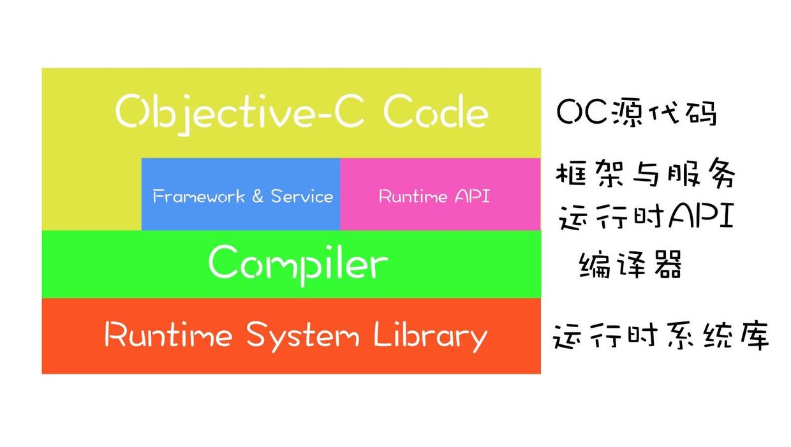
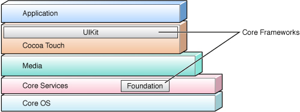
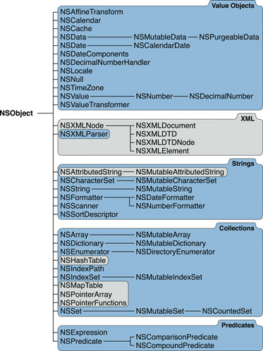
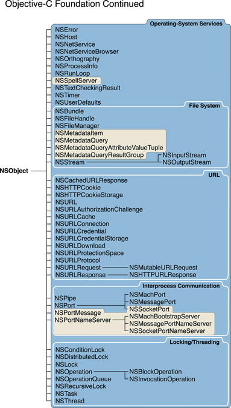
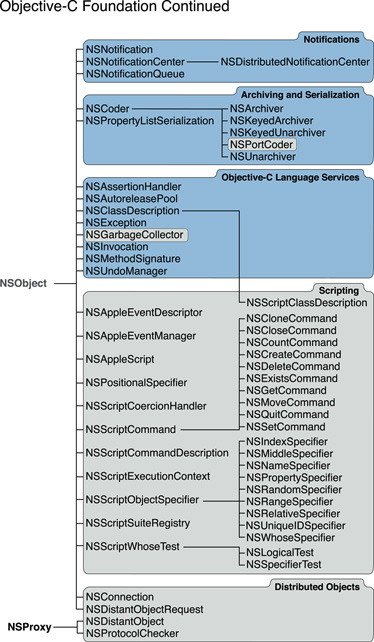
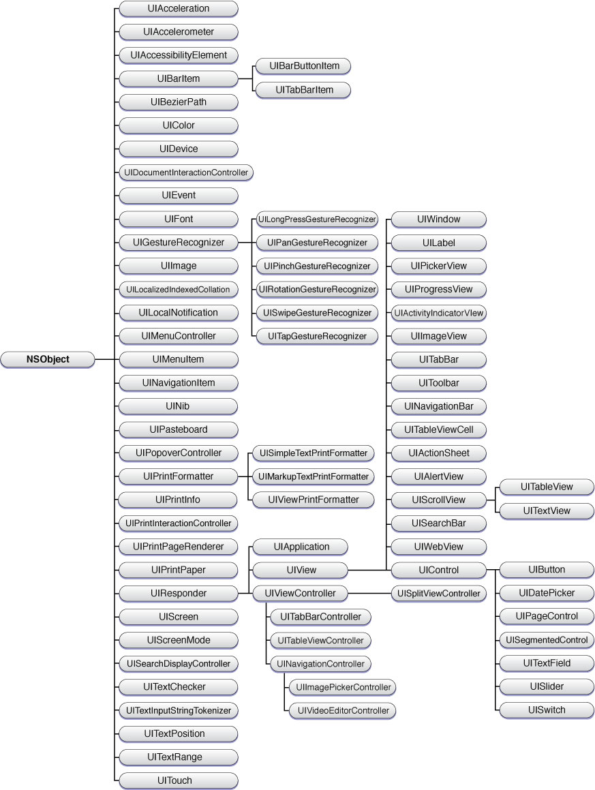
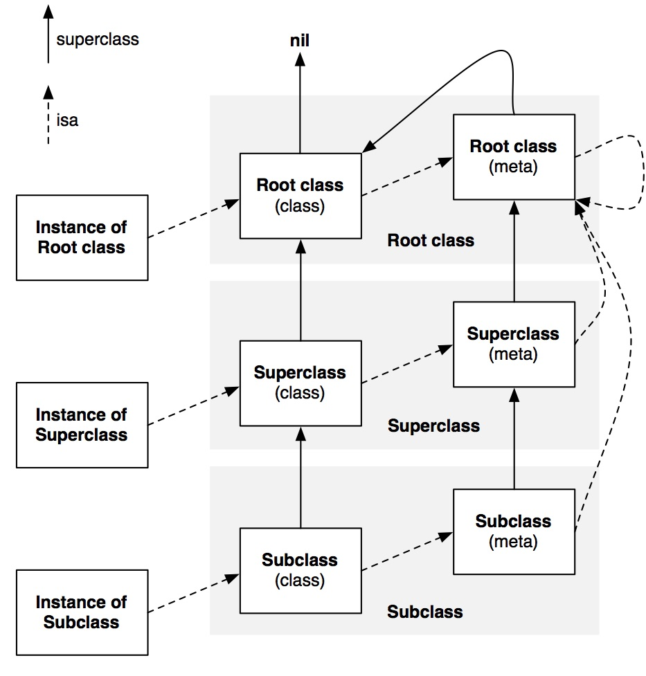
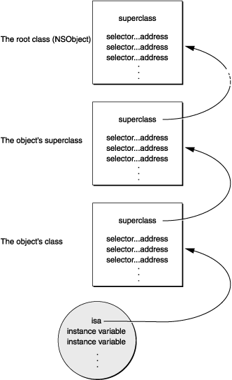
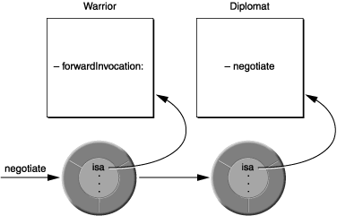

引言
上一篇文章讨论了 Swift 下如何实现 Runtime 的一些实际应用，那么这篇文章索性了解下 iOS 的 Runtime 机制。
虽然 Swift 作为一门编程语言是不具有动态性的，使用 Swift 编写的代码，在编译时就确定了调用那个函数，而不是 Objective-C 的运行时发消息，它采用的是类似 C++ 的 vtable，这样的机制确保了 Swift 代码运行的更快，然而由于 iOS 的核心框架 Cocoa 是使用 Objective-C 编写的，而 Swift 为了向 Objective-C 兼容，也做了很多妥协，因此还是有必要了解下 Objective-C 的 Runtime 机制。
学习 Runtime 最好的方法当然是看官方文档和读源码，所以这里就先把地址贴出来。
Objective-C Runtime Programming Guide
Runtime 简介
Runtime 又叫运行时，是一套底层的 C 语言 API，其为 iOS 内部的核心之一，我们平时编写的 Objective-C 代码，底层都是基于它来实现的。
Objective-C 是动态语言，这意味着它不仅需要一个编译器，也需要一个运行时系统来动态得创建类和对象、进行消息传递和转发。而 Runtime 系统扮演了 Objective-C 语言的一个操作系统的角色，也正是因为它，Objective-C 语言才能那样运行。
Runtime 版本和平台
事实上有两个 Runtime 版本，Legacy 和 Modern，他们运行在不同的平台中，目前我们常用的平台都使用的是 Modern 版本。
运行在 iPhone 上的应用以及运行在 OS X v10.5 系统上的 64-bit 的程序使用的
Modern版本的Runtime其他的 32-bit 程序使用的
Legacy版本。
两个版本最显著的区别在于在 Modern 版本中，实例变量是不那么”易碎的”(non-fragile)
在
Legacy的Runtime中，如果你改变了类中实例变量的布局，那么必须重新编译所以继承自此类的子类。在
Modern的Runtime中，则不需要重新编译他的子类。
此外,现行版本支持声明 property 的 synthesis 属性器。
Objective-C 与 Runtime 的交互
Objective-C 在三个层面上与 Runtime 系统进行交互：

通过 Objective-C 源代码
多数情况我们只需要编写 Objective-C 代码即可，Runtime 系统自动在幕后搞定一切，我们调用方法，编译器会将 Objective-C 代码转换成运行时代码，在运行时确定数据结构和函数。这些数据结构会捕获类，分类和协议生命中的信息；这些信息包括类和协议对象，方法选择器(method selector)、实例变量模板和从源码中提炼的其他信息。运行时的核心原则是发送消息。
通过 NSObject 方法
Cocoa 中大多数的类都是 NSObject 类的子类，这些类都继承了 NSObject 类的方法，唯一的例外是 NSProxy 类，它和 NSObject 一样，是一个基类，是专门用于实现代理对象的类。
有的 NSObject 中的方法起到了抽象接口的作用，比如 description 方法，NSObject 类并不知道类中都有什么信息，所以他只会返回包含这个对象名字和地址的字符串，对于他的子类，则需要你重载它并为你定义的类提供描述内容。NSObject 还有些方法能在运行时获得类的信息，并检查一些特性，比如 class 返回对象的类；isKindOfClass: 和 isMemberOfClass: 则检查对象是否在指定的类继承体系中；respondsToSelector: 检查对象能否响应指定的消息；conformsToProtocol: 检查对象是否实现了指定协议类的方法；methodForSelector: 则返回指定方法实现的地址。
这里需要注意的是在
Objective-C中，NSObject不仅是类名，也是个协议名，NSObject作为根协议，定义了一些接口方法，而NSObject类遵守这个协议，并且在内部实现了这些方法，包括上段提到的那些方法，而在Swift中，根协议NSObject改名为NSObjectProtocol。
通过 Runtime 的方法
Runtime 系统是一个由一系列函数和数据结构组成，具有公共接口的动态共享库。头文件存放于 /usr/include/objc 目录下。许多函数允许你用纯 C 代码来重复实现 Objective-C 中同样的功能。虽然有一些方法构成了 NSObject 类的基础，但是你在写 Objective-C 代码时一般不会直接用到这些函数的，除非是写一些 Objective-C 与其他语言的桥接或是底层的 debug 工作。在 Objective-C Runtime Reference 中有对 Runtime 函数的详细文档。
Cocoa 对象
既然说到了 NSObject，那么也顺便了解下整个 Cocoa 框架。 Cocoa 框架是 iOS 程序的基础，它是OS X和 iOS操作系统的程序的运行环境。在 Cocoa 众多框架中，最重要的两个基础框架是： Foundation 和 UIKit。Foundation 和界面无关，也可以说和界面无关的类基本是Foundation 框架的，和界面相关的是 UIKit 框架。这两个框架在系统中处于的位置如图：

Foundation 框架
下面这几张图描述了 Foundation 框架的类组织架构图，图中灰色的是 iOS 不支持的，灰色部分是 OS X 系统的。



将上图Foundation框架中的类进行逻辑分类如下：
值对象
集合
操作系统服务，包括下面三个：
文件系统和URL
进程间通讯
线程和子任务。
通知
归档和序列化
表达式和条件判断
Objective-C语言服务
UIKit 框架
应用程序可以通过三种方式使用 UIKit 创建界面:
在用户界面工具（interface Buidler）从对象库里拖拽窗口，视图或者其他的对象使用。
用代码创建
通过继承
UIView类或间接继承UIView类实现自定义用户界面
下面这几张图描述了框架类组织架构：

在图中可以看出，UIResponder 类是图中最大分支的根类，UIResponder 为处理响应事件和响应链 定义了界面和默认行为。
当用户用手指滚动列表或者在虚拟键盘上输入时，UIKit 就生成时间传送给UIResponder 响应链，直到链中有对象处理这个事件。相应的核心对象，比如：UIApplication, UIWindow, UIView 都直接或间接的从 UIResponder 继承。
NSObject 起源
从上一小节我们知道 NSObject 是 Cocoa 框架的两大基类之一，那么 NSObject 的结构是怎样的呢？了解 NSObject 的结构有助于我们了解整个 Objective-C 的运行时消息机制有很大的帮助，那么我们直接去看源码。
在 NSObject 的头文件中，看到 NSObject 的定义如下：
@interface NSObject <NSObject> {
Class isa OBJC_ISA_AVAILABILITY;
}首先我们看到 NSObject 遵循 NSObject 协议，其次，可以看到他包含一个 Class 类型的名字为 isa 的属性，那么 Class 又是什么鬼？继续找，找到 objc 的头文件中找到：
typedef struct objc_class *Class
struct objc_class {
Class isa OBJC_ISA_AVAILABILITY;
Class super_class OBJC2_UNAVAILABLE;
const char *name OBJC2_UNAVAILABLE;
long version OBJC2_UNAVAILABLE;
long info OBJC2_UNAVAILABLE;
long instance_size OBJC2_UNAVAILABLE;
struct objc_ivar_list *ivars OBJC2_UNAVAILABLE;
struct objc_method_list **methodLists OBJC2_UNAVAILABLE;
struct objc_cache *cache OBJC2_UNAVAILABLE;
struct objc_protocol_list *protocols OBJC2_UNAVAILABLE;
} OBJC2_UNAVAILABLE;从上面的源码看到， Class 是一个指向 objc_class 结构体的指针，在 Objective-C 2.0 之前，objc_class 结构体包含的信息我们可以从源码中看到，Objective-C 2.0 的头文件虽然没暴露出objc_class 结构体更详细的设计，我们依然可以从 Objective-C 1.0 的定义中小窥端倪，我们首先简写一些，用更 C 的方式去除掉一些不必要的东西：
注：可以找到
Objective-C2.0 中objc-class的结构，但本篇以Objective-C1.0 为例。如果想了解
Objective-C2.0 中的Class和isa，请移步阅读神经病院Objective-C Runtime入院第一天——isa和Class
struct NSObject {
objc_class *isa
}
struct objc_class {
Class isa
Class super_class
const char *name
long version
long info
long instance_size
struct objc_ivar_list *ivars
struct objc_method_list **methodLists
struct objc_cache *cache
struct objc_protocol_list *protocols
}现在就很清楚了， objc_class 结构体中，还有一个 isa 指针，这里的 isa 指针指向的是元类对象(metaclass object)，为什么会有这么一个东西呢？ Objective-C 类本身也是个对象(类对象)，为了处理类和对象的关系，Runtime 库创建了一种叫做元类 (Meta Class) 的东西，类对象所属类型就叫做元类，它用来表述类对象本身所具备的元数据。这些数据包括类的版本，名称，类方法等。我们用的类方法就定义于此处，因为这些方法可以理解成类对象的实例方法。所有的元类对象都指向 NSObject 的元类对象，到头来还是 NSObject。 每个类仅有一个类对象，而每个类对象仅有一个与之相关的元类。元类的概念有点不好理解，没关系，我们先看其他的信息。
objc_class 结构体中定义了第二个成员变量 Class super_class，它是指向父类的类对象。 剩下还包含一些运行时需要的类名，版本信息等。剩下还有四个结构体，其中 ivars 是一个指向 objc_ivar_list 结构体的指针， methodLists 是指向 objc_method_list 指针的指针， cache 是一个指向 objc_cache 结构体的指针， protocols 是一个指向 objc_protocol_list 结构体的指针。由于 ivars 和 methodLists 的特性，一个是指向结构体的指针，一个是指向结构体指针的指针，这也就解释了为何类可以动态的添加成员方法而不能添加属性。下面我们来分别看下这四个结构体的具体实现。
struct objc_ivar_list {
int ivar_count OBJC2_UNAVAILABLE;
int space OBJC2_UNAVAILABLE;
/* variable length structure */
struct objc_ivar ivar_list[1] OBJC2_UNAVAILABLE;
} OBJC2_UNAVAILABLE;
struct objc_method_list {
struct objc_method_list *obsolete OBJC2_UNAVAILABLE;
int method_count OBJC2_UNAVAILABLE;
int space OBJC2_UNAVAILABLE;
/* variable length structure */
struct objc_method method_list[1] OBJC2_UNAVAILABLE;
} OBJC2_UNAVAILABLE;
struct objc_cache {
unsigned int mask /* total = mask + 1 */ OBJC2_UNAVAILABLE;
unsigned int occupied OBJC2_UNAVAILABLE;
Method buckets[1] OBJC2_UNAVAILABLE;
};
struct objc_protocol_list {
struct objc_protocol_list *next;
long count;
Protocol *list[1];
};
struct objc_ivar {
char *ivar_name OBJC2_UNAVAILABLE;
char *ivar_type OBJC2_UNAVAILABLE;
int ivar_offset OBJC2_UNAVAILABLE;
int space OBJC2_UNAVAILABLE;
}
struct objc_method {
SEL method_name OBJC2_UNAVAILABLE;
char *method_types OBJC2_UNAVAILABLE;
IMP method_imp OBJC2_UNAVAILABLE;
} OBJC2_UNAVAILABLE;上面这段 C 语言代码应该不是特别难理解。我们事实上可以直接理解为 objc_ivar_list 结构体存储着 objc_ivar 数组列表，而 objc_ivar 结构体存储了类的单个成员变量的信息；同理 objc_method_list 结构体存储着 objc_method 数组列表，而 objc_method 结构体存储了类的某个方法的信息；objc_protocol_list 结构体存储着类的遵循的协议的信息。
这里还有一个 objc_cache，顾名思义它是缓存，它在 objc_class 的作用很重要。我们在 runtime.h 文件中找到了 Cache 的定义：
typedef struct objc_cache *Cache OBJC2_UNAVAILABLE;
struct objc_cache {
unsigned int mask /* total = mask + 1 */ OBJC2_UNAVAILABLE;
unsigned int occupied OBJC2_UNAVAILABLE;
Method buckets[1] OBJC2_UNAVAILABLE;
};
typedef struct old_method *Method;
struct old_method {
SEL method_name;
char *method_types;
IMP method_imp;
};
Cache为方法调用的性能进行优化，通俗地讲，每当实例对象接收到一个消息时，它不会直接在isa指向的类的方法列表中遍历查找能够响应消息的方法，因为这样效率太低了，而是优先在Cache中查找。Runtime系统会把被调用的方法存到Cache中（理论上讲一个方法如果被调用，那么它有可能今后还会被调用），下次查找的时候效率更高。这跟计算机组成原理中学过的CPU绕过主存先访问Cache的道理挺像，而我猜苹果为提高Cache命中率应该也做了努力吧。
根据源码可以看到 objc_cache 中存储了两个 unsigned int 类型的变量和一个 Method 类型的变量。
mask：分配用来缓存 bucket 的总数。
occupied：表明目前实际占用的缓存 bucket 的个数。
Method 结构体中存储了一个 SEL 类型的方法名，方法类型和一个 IMP 类型的方法指针。
Method buckets[1] 其实就是一个散列表，用来存储 Method 的链表。
IMP 实际上就是指向一个方法实现的指针。
/// A pointer to the function of a method implementation.
typedef void (*IMP)(void /* id, SEL, ... */ );
typedef id (*IMP)(id, SEL, ...);
了解完了 NSObject 的具体实现，我们来看下一个实例到底是如何来实现消息传递的。
首先我们举一个例子，我们定义这样一个类：
class Person: NSObject {
}
class Man: Person {
}然后实例化一个对象：
let ramsey = Man()我们在 objc.h 中找到一个类的实例的结构如下：
/// Represents an instance of a class.
struct objc_object {
Class isa OBJC_ISA_AVAILABILITY;
};类的实例对象中有一个 isa 指针，这个指针是指向它的类。
由于 Man 继承自 Person, Person 继承自 NSObject 类，所以它也继承了 NSObject 的 isa, 所以实例对象 ramsey 的这个 isa 指针实际上就是指向他的类 Man，由于这个类 Man 是一个 Class 类型的结构体，所以它还包含一个叫 super_class 的指向 Class(也就是 objc_class 结构体类型) 类型的指针，在这里， super_class 指向它的父类 Man，而 Man 类结构体中的叫 isa 的指向 Class 类型的指针指向的是他的元类，而元类结构体里的结构也是一样的， super_class 指针指向元类的父类也就是 Man 类的元类， isa 指针则指向根类 NSObject 的元类。至此，这一层的指针都有了指向，然后再去父类中，按照相同的逻辑一直到根类 NSObject 中，NSObject 没有父类，它的父类指向 nil，而他的元类的 super_class 则直接指向 NSObject，元类的 isa 也指向 NSObject。用一张图表示，则如下图：

注意点：
Root class (class)其实就是
NSObject，NSObject是没有超类的，所以Root class(class)的superclass指向nil。每个Class都有一个
isa指针指向唯一的Meta classRoot class(meta)的
superclass指向Root class(class)，也就是NSObject，形成一个回路。每个Meta class的
isa指针都指向Root class (meta)。
那这个元类存在的意义到底是什么呢？
是因为类方法而存在。
对象的实例方法调用时，通过对象的 isa 在类中获取方法的实现。
类对象的类方法调用时，通过类的 isa 在元类中获取方法的实现。
meta-class之所以重要，是因为它存储着一个类的所有类方法。每个类都会有一个单独的meta-class，因为每个类的类方法基本不可能完全相同。
想要深入理解元类，可以查看这篇文章
Runtime 术语
我们已经知道了 NSObject 的结构了，在开始学习 Runtime 的消息机制之前，一些准备工作还是需要的，了解下一些专业术语有助于我们更好的学习 Runtime。
SEL
在 objc.h 头文件中找到 SEL 的定义：
/// An opaque type that represents a method selector.
typedef struct objc_selector *SEL;SEL 是 selector ( Swift 中 Selector) 在 Objective-C 中的表示形式，selector 是方法选择器，而 SEL 是一个指向 objc_selector 的指针，可以理解为 SEL 是一个方法的编号（类似于 C 语言中的函数地址），selector 是通过方法编号（这个编号就是 SEL 类型的）来去方法的方法选择器，通过 @selector 则是去寻找方法地址，也就是去找匹配这个 SEL 类型的编号，找到方法地址（编号）之后就可以取出相应的方法。
id
在 objc.h 头文件中找到 id 的定义：
/// A pointer to an instance of a class.
typedef struct objc_object *id;
/// Represents an instance of a class.
struct objc_object {
Class isa OBJC_ISA_AVAILABILITY;
};id 是一个指向实例类对象的指针，objc_object 结构体包含一个 isa 指针，根据 isa 指针就可以顺藤摸瓜找到对象所属的类。
isa指针不总是指向实例对象所属的类，不能依靠它来确定类型，而是应该用class方法来确定实例对象的类。因为KVO的实现机理就是将被观察对象的isa指针指向一个中间类而不是真实的类，这是一种叫做isa-swizzling的技术，详见官方文档。
Method
在 runtime.h 头文件中找到 Method 的定义：
/// An opaque type that represents a method in a class definition.
typedef struct objc_method *Method;
struct objc_method {
SEL method_name OBJC2_UNAVAILABLE;
char *method_types OBJC2_UNAVAILABLE;
IMP method_imp OBJC2_UNAVAILABLE;
} OBJC2_UNAVAILABLE;Method 是一个指向结构体的指针，这个结构体里存储着方法名字，方法类型以及方法实现。所以 Method 类型其实就是代表类中某个方法的类型。
方法名
method_name是SEL类型，值得注意的是相同名字的方法及时在不同的类中，他们的方法选择器也相同。方法类型
method_types是个char指针，指针所指向的地址存放着方法参数类型以及返回值类型。method_imp指向了某个方法的具体实现，他是IMP类型的，实际上是个指针。
IMP
在 objc.h 头文件中找到 IMP 的定义：
/// A pointer to the function of a method implementation.
typedef void (*IMP)(void /* id, SEL, ... */ );
typedef id (*IMP)(id, SEL, ...);
IMP 是 implementation 的缩写，它是一个指向方法实现的指针。
这里补充一个 C 语言的小知识，函数指针。
函数指针是指向函数的指针，包含了函数的地址，可以通过它来调用函数。声明格式如下:
类型说明符 (*函数名)(参数)。其实这里不能称为函数名，应该叫做指针的变量名。这个特殊的指针指向一个返回特定类型的函数。指针的声明必须和它指向函数的声明保持一致。
char (*pFun)(int);例如上面这句话代表的意思是定义了一个指针变量
pFun，他是一个指向某个函数的指针，这个函数有一个int型的参数，返回值是char类型。我们可以使用
typedef来似的函数指针的定义更直观。typedef 返回类型(*新类型)(参数表)
typedef的功能是定义新的类型。这句话就是定义了一种PTRFUN的类型，并定义这种类型为指向某种函数的指针，这种函数以一个int为参数并返回char类型。后面就可以像使用int,char一样使用PTRFUN了。
所以现在我们知道了 IMP 是一个新类型，这种类型是一个指向某种函数的指针，这种函数的参数是 id 和 SEL, 返回值是 id。
那么 IMP 有什么作用呢？有了 IMP，理论上我们就可以直接绕开消息传递的阶段，直接执行方法。
IMP 指向的函数有两个参数，id 代表某个具体的实例对象，每个方法都对应一个 SEL 类型的方法选择器，而每个实例对象中的 SEL 对应的方法实现肯定是唯一的，如此，通过 id 和 SEL 两个参数就可以确认唯一的方法实现地址。
这里我们可以举个例子还看下 IMP 的具体使用，我们通过重写之前文章的 Method Swizzling 的例子：
#import "UIViewController+ViewDidLoad.h"
#import <objc/objc-class.h>
/*
这里之所以自定义了IMP，主要是因为环境配置的原因。
Xcode默认情况下这么个配置
Enable Strict Checking of objc_msgSend Calls
设置为 YES
这种情况下IMP被定义为无参数无返回值的函数。
所以你需要到工程里搜索到这个选项并把它关闭。
这样的麻烦就是，每次使用，你都需要修改工程配置。
这里我们就重新定义一个和有参数的IMP指针相同的指针类型，在获取有参数的IMP时把它强转为此类型。
再重新定义一个和无参数的IMP指针相同的指针类型，在获取无参数的IMP时把它强转为此类型。
*/
typedef id (*_IMP)(id, SEL, ...);
typedef void (*_VIMP)(id, SEL, ...);
@implementation UIViewController (ViewDidLoad)
+ (void)load {
// 保证方法只执行一次
static dispatch_once_t onceToken;
dispatch_once(&onceToken, ^{
// 获取原始方法
Method viewDidLoad = class_getInstanceMethod(self, @selector(viewDidLoad));
// 获取原始方法的实现
_IMP viewDidLoad_IMP = (_IMP)method_getImplementation(viewDidLoad);
// 重新设置方法实现
method_setImplementation(viewDidLoad, imp_implementationWithBlock(^(id target, SEL action) {
// 调用原有方法实现
viewDidLoad_IMP(target, @selector(viewDidLoad));
// 新增代码
NSLog(@"%@ did load", target);
}));
});
}
@end
// <ViewController: 0x7fca7ce05f30> did load值得注意的是，如果你重写的方法有返回值，不要忘记在最后做 return。
实际上直接调用一个方法的 IMP 指针的效率是高于调用方法本身的，所以，如果有一个合适的时机获取到方法的 IMP 的话，可以尝试使用一下。
Ivar
在 runtime.h 头文件中找到 Ivar 的定义：
/// An opaque type that represents an instance variable.
typedef struct objc_ivar *Ivar;Ivar 是一种代表类中实例变量的类型。
而 objc_ivar在上面的成员变量列表中也提到过：
struct objc_ivar {
char *ivar_name OBJC2_UNAVAILABLE;
char *ivar_type OBJC2_UNAVAILABLE;
int ivar_offset OBJC2_UNAVAILABLE;
int space OBJC2_UNAVAILABLE;
}可以根据实例查找其在类中的名字，也就是“反射”：
-(NSString *)nameWithInstance:(id)instance {
unsigned int numIvars = 0;
NSString *key = nil;
Ivar * ivars = class_copyIvarList([self class], &numIvars);
for(int i = 0; i < numIvars; i++) {
Ivar thisIvar = ivars[i];
const char *type = ivar_getTypeEncoding(thisIvar);
NSString *stringType = [NSString stringWithCString:type encoding:NSUTF8StringEncoding];
if (![stringType hasPrefix:@"@"]) {
continue;
}
if ((object_getIvar(self, thisIvar) == instance)) {//此处若 crash 不要慌！
key = [NSString stringWithUTF8String:ivar_getName(thisIvar)];
break;
}
}
free(ivars);
return key;
}class_copyIvarList 函数获取的不仅有实例变量，还有属性。但会在原本的属性名前加上一个下划线。
Property
@property 标记了类中的属性，这个不必多说大家都很熟悉，它是一个指向 objc_property 结构体的指针：
typedef struct objc_property *Property;
typedef struct objc_property *objc_property_t;//这个更常用可以通过 class_copyPropertyList 和 protocol_copyPropertyList 方法来获取类和协议中的属性：
objc_property_t *class_copyPropertyList(Class cls, unsigned int *outCount)
objc_property_t *protocol_copyPropertyList(Protocol *proto, unsigned int *outCount)返回类型为指向指针的指针，因为属性列表是个数组，每个元素内容都是一个 objc_property_t 指针，而这两个函数返回的值是指向这个数组的指针。
举个栗子，先声明一个类：
@interface Lender : NSObject {
float alone;
}
@property float alone;
@end然后可以通过下面的方法获取它的属性
// 获取属性列表
id LenderClass = objc_getClass("Lender");
unsigned int outCount, i;
objc_property_t *properties = class_copyPropertyList(LenderClass, &outCount);
for (i = 0; i < outCount; i++) {
objc_property_t property = properties[i];
// class_getProperty 和 protocol_getProperty 这两个方法来在类和协议中获取属性的引用
// property_getName 函数来查找属性名称
// property_getAttributes 函数来发掘属性的名称和@encode类型字符串
fprintf(stdout, "%s %s\n", property_getName(property), property_getAttributes(property));
}对比下 class_copyIvarList 函数，使用 class_copyPropertyList 函数只能获取类的属性，而不包含成员变量。但此时获取的属性名是不带下划线的。
了解完了 Runtime 的一些专业术语之后，我们来看看它的消息机制到底是什么？
Runtime 的消息
objc_msgSend 方法
在 Obejctive-C 中消息直到运行时才会与方法实现进行绑定。我们平时写代码的时候会写如下代码：
[receiver message]编译器会将这样一条消息转换为
objc_msgSend(receiver, selector)如果发送的消息有参数，那么这些参数也会同时传给 objc_msgSend 方法：
objc_msgSend(receiver, selector, arg1, arg2, ...)objc_msgSend 的源码是用汇编语言实现的，和它类似的方法还有如下几个：
objc_msgSend_stret（返回值是结构体）
objc_msgSend_fpret（返回值是浮点型）
objc_msgSendSuper（调用父类方法）
objc_msgSendSuper_stret（调用父类方法，返回值是结构体）它们的作用都是类似的，为了简单起见，后续介绍消息和消息传递机制都以 objc_msgSend 方法为例。
我们找到 message.h 头文件中 objc_msgSend 的声明：
OBJC_EXPORT id objc_msgSend(id self, SEL op, ...)
/*
self: 指向实例的类的指针，这个类会接收消息。
op: 处理消息的方法的方法选择器
id: 这个方法的返回值。注意 objc_msgSend 本身是没有返回值的，这个返回值是发送消息的方法的返回值。
*/为了能够动态绑定，消息方法会经过下面三个过程：
首先它会去找到方法选择器所指的方法的实现。由于不同的类可以允许相同名字的方法实现的存在，因此它会根据接收者的类来确定具体的方法实现。
然后它会将接收者对象(实际上就是
self这个指针)、所需要的参数传递给程序。最后它会讲程序(实际上的方法)的返回值作为自己的返回值传回来。这也就是
objc_msgSend方法其实没有返回值，它的返回值id是实际上的方法的返回值。
消息传递的关键点在于编译器为每个类或者对象构建的结构，每个类结构都包含下面两个必要的元素：
一个指向父类的指针。
一个类的分发表(dispatch table)。这个分发表其实就是方法列表，他将类中的方法选择器和方法实现地址关联了起来。
当一个对象呗实例化的时候，首先会开辟一段内存给它，然后它的实例变量会被初始化。回想上面提到的，对象的结构：
/// Represents an instance of a class.
struct objc_object {
Class isa OBJC_ISA_AVAILABILITY;
};在对象的变量中一定有一个指向它所属类的指针 isa，这样对象就可以和它的类联系到一起了，然后通过类中的 super_class 指针就可以和它的父类联系起来了。
下面这张图描述了这种关系。

还记得我们之前学习 NSObject 的结构体的时候里面有个 cache,这个 cache 就是在这消息发送的过程中被利用的，用来优化寻找方法实现的逻辑。运行时系统会自动缓存一些用过的方法实现和方法选择器(当然是一一对应起来的，理论上一个方法被使用过后，那么它还被使用的概率很高)，每个类都有自己的方法缓存，缓存里不仅可以保存定义在自己类中的方法选择器和方法实现，还可以保存继承来的方法实现和方法选择器。缓存里的方法选择器理论上会越来越多，并且随着程序一直在被运行，几乎所有的方法选择器都可以在缓存中找到，这大大提高了效率。
通过上面这些知识，我们就可以知道一个消息被发送给一个对象之后，它所代表的方法实现到底是如何被找到并且执行的：
检测这个
selector是不是要忽略的。比如Mac OS X开发，有了垃圾回收就不理会retain,release这些函数了。检测这个
target是不是nil对象。Objective-C的特性是允许对一个nil对象执行任何一个方法不会Crash，因为会被忽略掉。如果上面两个都过了，那就开始查找这个类的
IMP，先从cache里面找，完了找得到就跳到对应的函数去执行。如果
cache找不到就找一下方法分发表。如果分发表找不到就到父类的分发表去找，一直找，直到找到
NSObject类为止。找到了就将方法加入对应类的cache表中。如果还找不到就要开始进入动态方法解析了。后面会提到。
如果动态方法解析仍不能解决问题，只能进行最后一次尝试，进入消息转发流程。后面会提到。
如果还没找到，那我也没辙了。
使用隐藏参数
当 objc_msgSend 方法找到消息所对应的方法实现后，会将所有的方法参数传递给方法实现，同时也会传递两个隐藏参数，就像上面我们看到 objc_msgSend 的结构里一样：
一个参数代表接收对象(
self)一个参数代表这个方法的方法选择器(
_cmd)
之所以这个两个参数被称为隐藏参数，是因为它们并没有被定义在源码里，而是代码被编译的时候被插入到方法实现中，尽管如此，在源码我们仍然可以引用它们，我们仍然可以使用这两个隐藏参数，self 引用了接收者对象，而 _cmd 引用了方法本身的选择器：
- strange
{
id target = getTheReceiver();
SEL method = getTheMethod();
if ( target == self || method == _cmd )
return nil;
return [target performSelector:method];
}这两个参数中， self 明显更有用，它是方法实现中访问消息对象的实例变量的途径。
那我们顺便来看看下面这个方法：
OBJC_EXPORT id objc_msgSendSuper(struct objc_super *super, SEL op, ...)
/// Specifies the superclass of an instance.
struct objc_super {
/// Specifies an instance of a class.
__unsafe_unretained id receiver;
/// Specifies the particular superclass of the instance to message.
/* For compatibility with old objc-runtime.h header */
__unsafe_unretained Class class;
__unsafe_unretained Class super_class;
/* super_class is the first class to search */
};我们结合源码以及里面的解释，可以看到，当方法中的 super 关键字接收消息的时候，会调用 objc_msgSendSuper 方法，而此时编译器会创建一个 objc_super 结构体，这个结构体里指明了消息的接收者以及消息被传递的对象。通俗的讲就是，当使用 super 关键字的时候，消息的接收者永远都是 self，而消息的实现会在父类中查找。
练习(一) [self class] 与 [super class]
那么看下下面这个例子：
下面这段代码会输出什么？
@implementation Son : Father - (id)init { self = [super init]; if (self) { NSLog(@"%@", NSStringFromClass([self class])); NSLog(@"%@", NSStringFromClass([super class])); } return self; } @end
我们来分析下，当执行到 [self class] 这句话的时候，运行时系统会调用 obj_msgSend 方法，接收者是 self，也就是本类，所以会在 Son 这个类中查找 class 方法的 IMP，显然是找不到的，因为 class 这个方法是在 NSObject 类中定义的，所以会一直找到 NSObject 类中，最终在 NSObject 类中找到 class 方法的 IMP，找到后调用 object_getClass(), 最后变成 obj_msgSend(self, @selector(class)), 其结果是 Son。
当执行 [super class] 这句话的时候，会调用 obj_msgSendSuper 方法，然后找到父类 super_class，开始查找 class 的 selector，找不到，再去 NSObject 中找，最终找到了，然后调用者调用这个方法实现，objc_msgSendSuper 变成了 objc_msgSend(objc_super->receiver, @selector(class))，调用者依旧是 self，所以返回值仍然是 Son。
练习(二) isKindOfClass 与 isMemberOfClass
下面代码输出什么？
@interface Sark : NSObject @end > @implementation Sark @end > int main(int argc, const char * argv[]) { @autoreleasepool { BOOL res1 = [(id)[NSObject class] isKindOfClass:[NSObject class]]; BOOL res2 = [(id)[NSObject class] isMemberOfClass:[NSObject class]]; BOOL res3 = [(id)[Sark class] isKindOfClass:[Sark class]]; BOOL res4 = [(id)[Sark class] isMemberOfClass:[Sark class]]; > NSLog(@"%d %d %d %d", res1, res2, res3, res4); } return 0; }
我们首先在找到这几个方法的源码实现：
+ (Class)class {
return self;
}
- (Class)class {
return object_getClass(self);
}
Class object_getClass(id obj)
{
if (obj) return obj->getIsa();
else return Nil;
}
/*
inline关键字
意义：表示内联函数
作用：为了解决函数调用效率问题
原理：编译的时候会把代码直接嵌入刀调用代码中，省去了汇编时候的call指令。
call指令作用如下：
1. 将下一条指令的所在地址（即当时程序计数器PC的内容）入栈
2. 并将子程序的起始地址送入PC（于是CPU的下一条指令就会转去执行子程序）。
优点：与#define宏定义类似，相当于用#define宏定义定义了一个函数。
*/
/*
::作用域运算符
意义：作用域运算符描述成员所属的类。
格式：<类>::<成员名>。
解读：在这里表示getIsa() 方法定义在 objc_object 中，但并未实现，在这里实现了。
*/
/*
tagged pointer：对64位的设备对象进行类对象指针的优化，利用合理的bit（arm64设备为32位）存储类对象的地址，其他位用来进行内存管理。这种优化模式被称为tagged pointer。
*/
// 支持tagged pointer时候获取Class的函数
inline Class
objc_object::getIsa()
{
#if SUPPORT_TAGGED_POINTERS
if (isTaggedPointer()) {
uintptr_t slot = ((uintptr_t)this >> TAG_SLOT_SHIFT) & TAG_SLOT_MASK;
return objc_tag_classes[slot];
}
#endif
return ISA();
}
// 不支持tagged pointer时候获取Class的函数
inline Class
objc_object::ISA()
{
assert(!isTaggedPointer());
return isa.cls;
}
+ (BOOL)isMemberOfClass:(Class)cls {
return object_getClass((id)self) == cls;
}
- (BOOL)isMemberOfClass:(Class)cls {
return [self class] == cls;
}
+ (BOOL)isKindOfClass:(Class)cls {
for (Class tcls = object_getClass((id)self); tcls; tcls = tcls->superclass) {
if (tcls == cls) return YES;
}
return NO;
}
- (BOOL)isKindOfClass:(Class)cls {
for (Class tcls = [self class]; tcls; tcls = tcls->superclass) {
if (tcls == cls) return YES;
}
return NO;
}先来分析第一句话：
BOOL res1 = [(id)[NSObject class] isKindOfClass:[NSObject class]];首先执行 [NSObject class]，这个返回的就是 NSObject 本身，很好理解。
接着看下 + (BOOL)isKindOfClass:(Class)cls 这个方法。这个方法内部，会先去通过 object_getClass 这个方法去获取 self 本身的类，也就是接收者本身的类，而 object_getClass 的源码实现是去调用当前类的 obj->getIsa()，最后在 ISA() 方法中获得 meta class 的指针（记得类的结构体中的 isa 指针是指向他的元类）。接着在 isKindOfClass 中有一个循环，先判断 class 是否等于 meta class，不等就继续循环判断是否等于 super class，不等再继续取 super class，如此循环下去。
在这里，cls 就是 NSObject 本身，执行这个方法后，第一次 for 循环时，先执行 object_getClass 这个方法，参数 self 指的是接收者，也就是 NSObject，这个方法返回 NSObject->getIsa()，然后调到 getIsa() 这个方法，这个方法返回 NSObject 的 isa，也就是元类 meta class 的指针。此时 tcls = NSObject -> meta class， 然后判断 tcls 是否存在，存在就进入循环，判断 tcls == cls，还记得之前那张图吗？ NSObject 的元类并不是它本身，NSObject -> meta class != NSObject。所以第一次判断不满足，继续进入循环，找到 tcls -> superclass，NSObject -> meta class -> superclass == NSObejct，这还是上面那张图的只是。此时判定正确，返回 YES。所以第一行输出应该为 YES。
同理，分析第二句话：
BOOL res3 = [(id)[Sark class] isKindOfClass:[Sark class]];这行代码的分析方法一样。
[Sark class] 返回 Sark 类本身。执行isKindOfClass，Sark 类本身不等于 Sark -> meta class，第一次循环失败；进入第二次循环，寻找父类，Sark -> meta class -> superclass == NSObject -> meta class，Sark != NSObject -> meta class，第二次循环失败；进入第三次循环，寻找父类，NSObject -> meta class -> superclass == NSObject，Sark != NSObject，第三次循环失败；进入第四次循环，NSObject -> superclass == nil，此时 tcls == nil了，直接退出循环，返回 NO。
如果这个地方改成
BOOL res3 = [sark isKindOfClass:[Sark class]];sark 是类 Sark 的一个实例，那么会返回 YES。因为方法中首先取 [self class] 的返回值作为 tcls 的值进行判断，而 [sark class] 就返回 Sark（实例对象的 isa 就是指向自己的类），所以第一次判断该的时候 tcls = Sark，cls = Sark，直接就返回 YES。
然后，我们看下 + isMenberOfClass，从源码可以看到这个方法直接比较接收者的元类与参数的类是否一样。
那就很简单，不多说了，
BOOL res2 = [(id)[NSObject class] isMemberOfClass:[NSObject class]];
BOOL res4 = [(id)[Sark class] isMemberOfClass:[Sark class]];NSObject 的元类是 NSObject -> meta class，与 NSObject 不相等，返回 NO。
Sark 的元类是 Sark -> meta class，与 Sark 不相等，返回 NO。
我们再来看 - isMenberOfClass，从源码可以看到这个方法直接比较接收者的类与参数的类是否一样。
所以假如我们换成下面这种写法呢？
BOOL res4 = [sark isMemberOfClass:[Sark class]];sark 的类是 Sark，与 Sark 相等，返回 YES。
练习(三) Class 与内存地址
再看一道题：
下面的代码会？Compile Error / Runtime Crash / NSLog…?
@interface Sark : NSObject @property (nonatomic, copy) NSString *name; - (void)speak; @end > @implementation Sark - (void)speak { NSLog(@"my name's %@", self.name); } @end > @implementation ViewController - (void)viewDidLoad { [super viewDidLoad]; id cls = [Sark class]; /* void *：void指针，一般被称为通用指针或泛指针，它是C关于“纯粹地址(raw address)”的一种约定。 当进行纯粹的内存操作时，或者传递一个指向未定类型的指针时，可以使用void指针。void指针也常常用作函数指针。 */ void *obj = &cls; /* __bridge id：在ARC环境下，使用 __bridge 关键字来实现id类型与void*类型的相互转换 */ [(__bridge id)obj speak]; } @end
这道题有两个难点。难点一，obj 调用 speak 方法，到底会不会崩溃。难点二，如果 speak 方法不崩溃，应该输出什么？
分别来看：
难点一：不会崩溃，为什么？
代码中使用 [Sark class] 这句话获得了指向 Sark 类的指针，并赋值给 cls，然后 cls 被强制转换为了 id 类型，根据前面的知识， id 类型其实是一个指向类实例的指针。所以这时候 cls 就是一个指向 Sark 类实例的指针，所以 obj 就是这个类实例，理所应当的一个类实例可以调用这个类的类方法。
难点二：应该输出什么？
我们看下 speak 这个方法，打印了 self.name，这个 self 是什么才是关键。根据之前学到的知识，self 其实是消息传递的时候的一个隐藏参数，代表了消息接收者。
首先我们了解下栈的概念。在计算机系统中，运行的应用程序的数据都是保存在内存中的，不同类型的数据，保存的内存区域不同。栈区(stack) 由编译器自动分配并释放，存放函数的参数值，局部变量等。栈是系统数据结构，对应线程/进程是唯一的。
栈存储每一个函数在执行的时候都会向操作系统索要资源，栈区就是函数运行时的内存，栈区中的变量由编译器负责分配和释放，内存随着函数的运行分配，随着函数的结束而释放，由系统自动完成。
当执行 - (void)viewDidLoad 方法的时候会分配给一个栈区，这个栈去会保存函数的参数以及一些局部变量，那我们看下栈区里面到底有些什么。
首先是函数的参数，由于
viewDidLoad方法并没有参数，所以入栈的仅仅只有两个隐藏参数，self和_cmd；其次执行第一行代码，是一个方法，
objc_msgSendSuper有两个参数objc_super和 方法选择器SEL，由于[super viewDidLoad] 这个方法执行的时候，runtime 会转换成 objc_msgSendSuper2(objc_super, @selector(viewDidLoad))，实际方法的接收者是 self，但是会去父类查找这个方法实现，所以相当于objc_msgSendSuper这个方法调用了viewDidLoad方法，这个方法的SEL已经有了，不需要栈空间再次为它分配地址。这里就只分配objc_super空间，这个结构体里有俩变量需要分配，一个self，一个super_class。然后
id cls = [Sark class];，生成一个局部变量，入栈。然后
void *obj = &cls;，又是一个局部变量，分配空间，入栈。最后
[(__bridge id)obj speak];这行代码，转换为objc_msgSend(obj, @selector(speak))，查找speak的方法实现，在Sark类中找到，需要打印出属性name，在调用self.name的时候，本质上是self指针在内存向高位地址偏移一个指针。最后你可以根据打印出来的地址，得出打印结果为
my name's <ViewController: 0x7faaace052a0>。
@implementation ViewController
- (void)viewDidLoad {
[super viewDidLoad];
NSLog(@"ViewController = %@ , 地址 = %p", self, &self);
NSLog(@"self = %p, _cmd = %p", &self, &_cmd);
id cls = [Sark class];
NSLog(@"Sark class/cls = %@ 地址/cls = %p", cls, &cls);
void *obj = &cls;
NSLog(@"Void *obj/obj = %@ 地址obj = %p", obj, &obj);
[(__bridge id)obj speak];
}
- (void)didReceiveMemoryWarning {
[super didReceiveMemoryWarning];
// Dispose of any resources that can be recreated.
}
@end
/*
2017-01-13 15:52:10.150 runtime[59122:3287610] ViewController = <ViewController: 0x7ffc58506760> , 地址 = 0x7fff5e17baa8
2017-01-13 15:52:10.151 runtime[59122:3287610] self = 0x7fff5e17baa8, _cmd = 0x7fff5e17baa0
2017-01-13 15:52:10.152 runtime[59122:3287610] Sark class/cls = Sark 地址/cls = 0x7fff5e17ba88
2017-01-13 15:52:10.152 runtime[59122:3287610] Void *obj/obj = <Sark: 0x7fff5e17ba88> 地址obj = 0x7fff5e17ba80
2017-01-13 15:52:10.153 runtime[59122:3287610] my name's <ViewController: 0x7ffc58506760>, 0x7fff5e17ba48, 0x7fff5e17ba90
*/这里我们把地址都打印出来，self.name 其实就是 self 的指针向高位地址偏移一个指针。一个指针是4位，所以应该是 self 的地址 加上 32 bits。
那么 self 的地址是多少呢？
我们知道 self 实际上应该是 Sark 类的地址，obj 是 Sark 的一个实例，它的 isa 指针指向的就是 Sark 类，也就是 cls 这个变量的地址，从结果也印证了这点，obj 的地址是 0x7fff5e17ba80， cls 的地址是 0x7fff5e17ba88，这个地址向高位偏移一个指针，也就是32 bits，加上就是 0x7fff5e17baa8，这个地址打印出来的东西就是 <ViewController: 0x7ffc58506760>。
参考这篇文章加深理解。
这道题还有点疑惑，待解决。
获取方法地址
我们可以避开消息绑定而直接获取方法地址来调用方法，这种做法非常适合大量重复调用某方法的极端情况，避开消息发送泛滥而直接调用该方法会更高效。在 IMP 那一节，已经给出例子了。
这里再给出一个例子:
void (*setter)(id, SEL, BOOL);
int i;
setter = (void (*)(id, SEL, BOOL))[target
methodForSelector:@selector(setFilled:)];
for ( i = 0 ; i < 1000 ; i++ )
setter(targetList[i], @selector(setFilled:), YES);当方法被当做函数调用时，上节提到的两个隐藏参数就需要我们明确给出了。
动态方法解析
动态方法解析
在某些情况下，我们需要动态的提供一个方法的具体实现。当你用 @dynamic 关键字来声明一个属性的时候，对编译器来说，这个属性所关联的方法讲会被动态的提供(setter 和 getter 方法)。你可以分别通过 resolveInstanceMethod: 和 resolveClassMethod: 方法来给一个实例或者类方法的方法选择器提供动态的实现。
一个 Objective-C 方法其实就是一个至少拥有两个参数(self 和 _cmd)的 C 语言函数。你可以通过 class_addMethod 给一个类添加一个函数，作为这个类的方法。
举个例子：
void dynamicMethodIMP(id self, SEL _cmd) {
// implementation ....
}
@implementation MyClass
+ (BOOL)resolveInstanceMethod:(SEL)aSEL
{
if (aSEL == @selector(resolveThisMethodDynamically)) {
class_addMethod([self class], aSEL, (IMP) dynamicMethodIMP, "v@:");
return YES;
}
return [super resolveInstanceMethod:aSEL];
}
@end通过分别重载 resolveInstanceMethod: 和 resolveClassMethod: 方法分别添加实例方法实现和类方法实现。
还记得之前 objc_msgSend 方法 这一小节讲到的吗？
如果分发表找不到就到父类的分发表去找，一直找，直到找到
NSObject类为止。找到了就将方法加入对应类的cache表中。如果还找不到就要开始进入动态方法解析了。后面会提到。
这里提到了。
动态方法解析会在消息转发机制浸入前执行。如果 respondsToSelector: 或 instancesRespondToSelector: 方法被执行，动态方法解析器将会被首先给予一个提供该方法选择器对应的 IMP 的机会。如果你想让该方法选择器被传送到转发机制，那么就让 resolveInstanceMethod: 返回 NO。
动态加载
在运行时， Objective-C 的程序可以加载、链接新的类或者分类。新的代码会被纳入到程序里，并且他们和程序刚开始运行的时候就存在的类没有任何区别。
动态加载可以做很多不同的事情，比如系统的许多模块都是动态加载的。
在 Mach-O 文件中，展现动态加载的 runtime 方法是 objc_loadModules，当然你可以使用更方便的 NSBundle 类中提供的方法。
消息转发
如果给一个对象发送一条它没能处理的消息，那么将会产生错误。在消息转发机制执行前，Runtime 系统会再给我们一次偷梁换柱的机会，来改变这条消息的接收对象。
重定向
在消息转发机制执行前，Runtime 系统会再给我们一次偷梁换柱的机会，即通过重载 - (id)forwardingTargetForSelector:(SEL)aSelector 方法替换消息的接受者为其他对象：
- (id)forwardingTargetForSelector:(SEL)aSelector
{
if(aSelector == @selector(mysteriousMethod:)){
return alternateObject;
}
return [super forwardingTargetForSelector:aSelector];
}毕竟消息转发要耗费更多时间，抓住这次机会将消息重定向给别人是个不错的选择。 如果此方法返回 nil 或 self，则会进入消息转发机制(forwardInvocation:); 否则将向返回的对象重新发送消息。如果返回了 non-nil 或者 non-self 的结果，那么返回的那个对象将是这条消息的新接受对象，并且消息会被分发给这个新对象。
如果你是在一个子类(非根类)中实现的这个方法，如果你的类没有什么可返回的 SEL，那么调用父类的这个方法。
这个方法给对象在进行消息转发之前一个机会来重定向一个发送给它的未知的消息。
如果想替换类方法的接受者，需要覆写 + (id)forwardingTargetForSelector:(SEL)aSelector 方法，并返回类对象：
+ (id)forwardingTargetForSelector:(SEL)aSelector {
if(aSelector == @selector(xxx)) {
return NSClassFromString(@"Class name");
}
return [super forwardingTargetForSelector:aSelector];
}转发
当一条消息被传递给一个对象的时候，而这个对象并没有处理这个消息， runtime 会在抛出错误之前给这个对象发送一条 forwardInvocation: 的消息，这条消息有一个唯一的参数 NSInvocation 对象。
我们可以通过实现 forwardInvocation: 这个方法来给这条消息一个默认的响应，或者来可以避免错误的产生。 forwardInvocation: 这个方法的作用就是替换消息的接收者为其他对象。
下面来看个例子：
我们假设设计了一个对象，这个对象可以响应 negotiate 这条消息，并且我们希望这条消息的响应包含其他类型对象的响应。可以很容易的通过在这条消息内部实现其他对象对这条消息的调用，比如下面这样：
- (id)negotiate
{
return [someOtherObject negotiate];
}接下来，我们希望对象对消息的响应与在别的类中实现的响应是一样的。有一种简单的实现方式，让我们的类继承自其他的类。然而，也有一些情况是不能这么做的，这种情况下对这个方法的实现的类在不同的继承树下。
即使我们不能通过继承这种方式，我们仍然可以通过将这条消息传递给其他类的一个实例来实现这个方法：
- (id)negotiate
{
if ( [someOtherObject respondsTo:@selector(negotiate)] )
return [someOtherObject negotiate];
return self;
}这种方式看起来有些笨重，尤其是当有很多消息想要传递给别的类的时候。
forwardInvocation: 方法提供的改变消息接收对象的功能可以很好的解决这个问题。当一个对象不能响应一条消息的时候(找不到这条消息的 IMP 与这条消息的 SEL 相匹配)，runtime 系统会通过发送 forwardInvocation: 这条消息来通知这个对象。runtime 系统给了这个消息接收者一个机会来讲这个消息代理给其他接收者。它通过创建一个 NSInvocation 对象来表示这个消息，然后发送一个讲这个NSInvocation对象作为唯一参数的 forwardInvocation:消息，从而达到代理这条消息的目的。每个继承自 NSObject 的类的对象都继承了这个方法，然而 NSObject 的 forwardInvocation: 仅仅引用了 doesNotRecognizeSelector:。通过重载 forwardInvocation: 并且实现这个方法，你可以改变一条消息的接受对象。
想要转发一条消息，需要
确定这条消息应该被转发到哪里
通过原始参数来传递它
消息可以通过 invokeWithTarget: 方法来传递。
我们来看一个例子，一个对象转发一条消息到一个 friend 实例中，forwardInvocation: 方法大概应该这样写：
- (void)forwardInvocation:(NSInvocation *)invocation
{
SEL aSelector = [invocation selector];
if ([friend respondsToSelector:aSelector])
[invocation invokeWithTarget:friend];
else
[super forwardInvocation:invocation];
}转发的消息必须有一个固定数量的参数，像 printf() 这种有可变参数的方法是不能转发的。转发的消息的返回值被返回给原始的发送者。任意类型的返回值都可以被传递回给发送者。
forwardInvocation: 方法的实现并不仅仅局限于消息转发。它还有一些别的用途，比如为了避免给每个 selector 都写一个独立的方法，可以将这些不同消息的响应方法合并起来。它也可以将一个给定的消息转发给不同响应对象，而不仅仅只转发给一个。
这里需要注意下这个方法的唯一参数 (NSInvocation *)anInvocation，这个参数 anInvocation 是从哪的来的呢？其实在 forwardInvocation: 消息发送前，runtime 系统会向对象发送 methodSignatureForSelector: 消息，并取到返回的方法签名用于生成 NSInvocation 对象。所以我们在重写 forwardInvocation:的同时也要重写 methodSignatureForSelector: 方法，否则会抛异常。
总的来说，forwardInvocation: 方法就像一个不能识别的消息的分发中心，将这些消息转发给不同接收对象。或者它也可以象一个运输站将所有的消息都发送给同一个接收对象。它可以将一个消息翻译成另外一个消息，或者简单的”吃掉“某些消息，因此没有响应也没有错误。forwardInvocation: 方法也可以对不同的消息提供同样的响应，这一切都取决于方法的具体实现。该方法所提供是将不同的对象链接到消息链的能力。
注意： forwardInvocation: 方法只有在消息接收对象中无法正常响应消息时才会被调用。 所以，如果我们希望一个对象将 negotiate 消息转发给其它对象，则这个对象不能有 negotiate 方法。否则，forwardInvocation: 将不可能会被调用。
转发和多继承
转发和继承相似，可以用于为 Objctive-C 编程添加一些多继承的效果。就像下图那样，一个对象把消息转发出去，就好似它把另一个对象中的方法借过来或是“继承”过来一样。

这使得不同继承体系分支下的两个类可以“继承”对方的方法，在上图中 Warrior 和 Diplomat 没有继承关系，但是 Warrior 将 negotiate 消息转发给了 Diplomat 后，就好似 Diplomat 是 Warrior 的超类一样。
消息转发弥补了 Objective-C 不支持多继承的性质，也避免了因为多继承导致单个类变得臃肿复杂。它将问题分解得很细，只针对想要借鉴的方法才转发，而且转发机制是透明的。
替代者对象(Surrogate Objects)
转发不仅能模拟多继承，也能使轻量级对象代表重量级对象。
转发和继承
尽管转发很像继承，但是 NSObject 类不会将两者混淆。像 respondsToSelector: 和 isKindOfClass: 这类方法只会考虑继承体系，不会考虑转发链。比如上图中一个 Warrior 对象如果被问到是否能响应 negotiate 消息：
if ( [aWarrior respondsToSelector:@selector(negotiate)] )
...结果是 NO，尽管它能够接受 negotiate 消息而不报错，因为它靠转发消息给 Diplomat 类来响应消息。
如果你为了某些意图偏要“弄虚作假”让别人以为 Warrior 继承到了 Diplomat 的 negotiate 方法，你得重新实现 respondsToSelector: 和 isKindOfClass: 来加入你的转发算法：
- (BOOL)respondsToSelector:(SEL)aSelector
{
if ( [super respondsToSelector:aSelector] )
return YES;
else {
/* Here, test whether the aSelector message can *
* be forwarded to another object and whether that *
* object can respond to it. Return YES if it can. */
}
return NO;
}除了 respondsToSelector: 和 isKindOfClass: 之外，instancesRespondToSelector: 中也应该写一份转发算法。如果使用了协议， conformsToProtocol:同样也要加入到这一行列中。类似地，如果一个对象转发它接受的任何远程消息，它得给出一个 methodSignatureForSelector: 来返回准确的方法描述，这个方法会最终响应被转发的消息。比如一个对象能给它的替代者对象转发消息，它需要像下面这样实现methodSignatureForSelector:：
- (NSMethodSignature*)methodSignatureForSelector:(SEL)selector
{
NSMethodSignature* signature = [super methodSignatureForSelector:selector];
if (!signature) {
signature = [surrogate methodSignatureForSelector:selector];
}
return signature;
}总结
这篇文章主要是简单学习了下 Objective-C 的 Runtime 机制的一些原理，看了些源码，读了读官方文档，搜了搜别人的一些博客，最终总结了这么一篇文章，算是自己对自己学习 Runtime 的一份记录。如果有哪些部分不太对的，也欢迎指正。
参考文章
神经病院Objective-C Runtime入院第一天——isa和Class
继续学习
神经病院Objective-C Runtime住院第二天——消息发送与转发